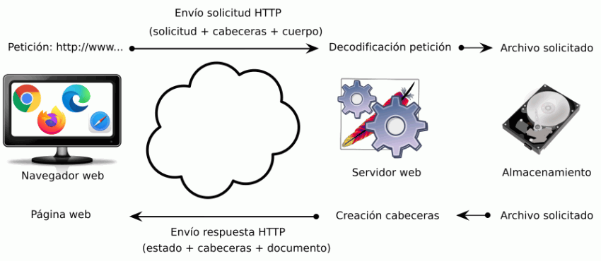

Esta lección comenta algunos aspectos básicos del protocolo HTTP importantes para entender el funcionamiento de las sesiones o de las cookies, que se tratan en la lección sobre sesiones y lección sobre cookies.
Comunicación entre el cliente y el servidor
Cuando un usuario solicita una página web a un servidor, el proceso se puede describir (de forma simplificada) en cuatro pasos:
El navegador solicita al servidor el documento mediante una solicitud HTTP.
El servidor prepara el documento.
El servidor envía el documento al navegador mediante una respuesta HTTP.
El navegador muestra el documento al usuario.

Solicitudes HTTP
La solicitud HTTP está formada por varias líneas de texto:
La línea de solicitud, que incluye:
El método que se va a utilizar (GET, POST, TRACE, etc.).
La ubicación del documento solicitado (URI).
La versión del protocolo HTTP.
Los campos de cabecera, que pueden incluir entre otros:
Referer: dirección de donde se ha obtenido la dirección del documento solicitado (si una página A contiene un enlace a otra página B, el navegador solicita en la línea de petición la página B, pero también envía la dirección de la página A como referer).
User-agent: información sobre el navegador (nombre, versión, etc).
Accept: tipos MIME, juegos de caracteres, codificaciones, idiomas, etc. admitidos por el navegador.
Cookies: Si el servidor ha almacenado previamente cookies en el cliente, estas se incluyen en las peticiones.
Una línea en blanco.
El cuerpo del mensaje, que incluye texto opcional como por ejemplo:
datos de un formulario cuyo método sea POST
Respuestas HTTP
La respuesta HTTP está formada por varias líneas de texto:
La línea de estado, que incluye:
La versión del protocolo HTTP.
El código de status (403, 404, 500, etc.).
El texto asociado al código de status (403=Forbidden, 404=Not found, 500=Internal Server Error, etc.).
Los campos de cabecera, que pueden incluir entre otros:
Location:permite decirle al cliente que solicite otro documento en lugar del documento solicitado inicialmente.
Content: tipo MIME, juego de caracteres, codificación, idioma, etc. del documento enviado.
Set-Cookie: permite decirle al cliente que cree una cookie.
Una línea en blanco.
El cuerpo del mensaje, que incluye el documento solicitado por el cliente.